Site Configuration
Site Configuration allows you to configure the standards used in your organization such as locations, currency codes, date formats, ethnic codes, etc.
How do I view/edit Site Preferences?
This information was first given in the Step 2: Site Config of the Configuration Wizard.
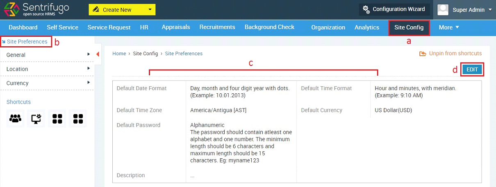
- Click Site Config in the top menu
- Click Site Preferences in the left menu panel
- You can view your Site Preference details here
- Click Edit icon
- Enter/Edit the details
- Click SAVE button
How do I set General Site Preferences?
You can set general preferences like time zones, nationalities, gender codes, ethnic codes etc. which will be consistent across the entire application
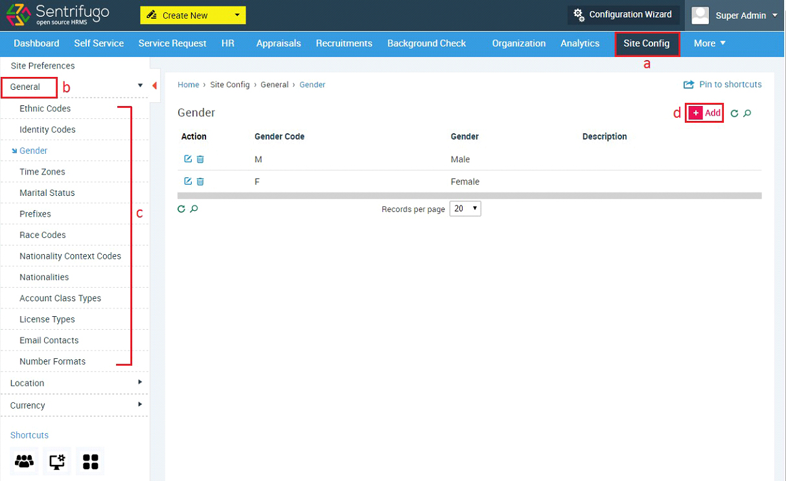
- Click Site Config in the top menu
- Click General on the left menu panel
- Click on any option in the submenu (We’ve used Gender as an example)
- Click +Add button
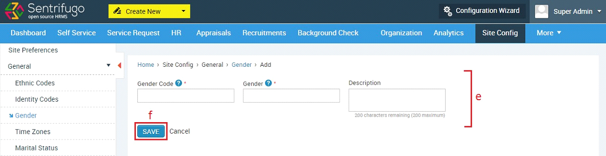
- Enter/Edit the details
- Click SAVE button
How do I set Identity Codes?
Identity code is the alphabets used in an Employee ID. For example in the Employee IDs EMP0033 and USER009, EMP and USER are the identity codes respectively.
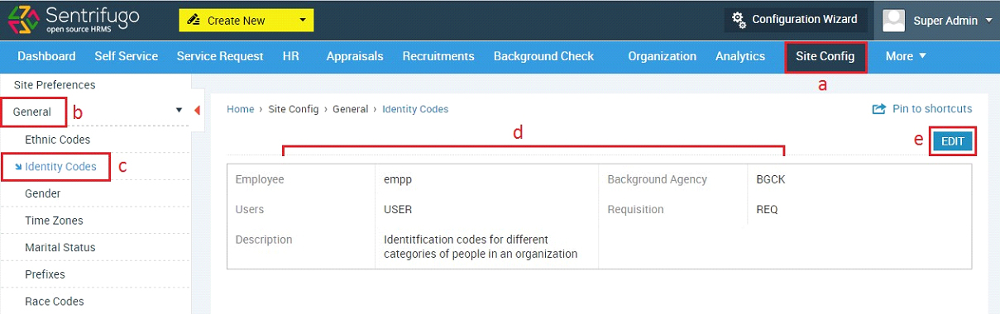
- Click Site Config in the top menu
- Click General on the left menu panel
- Click Identity Codes in the submenu
- Your default identity code details will be displayed here
- Click Edit icon
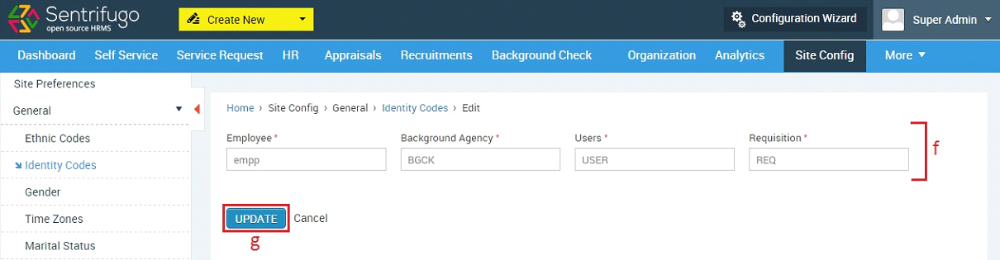
- Edit the details
- Click SAVE button
What should I do if my Country/State/City are not available in Sentrifugo?
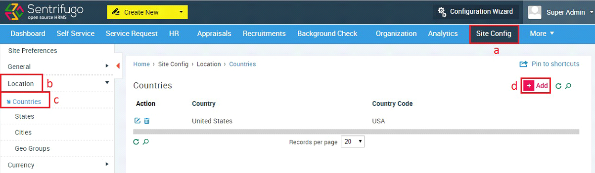
- Click Site Config in the top menu
- Click Location on the left menu panel
- Click Countries in the submenu
- Click +Add button
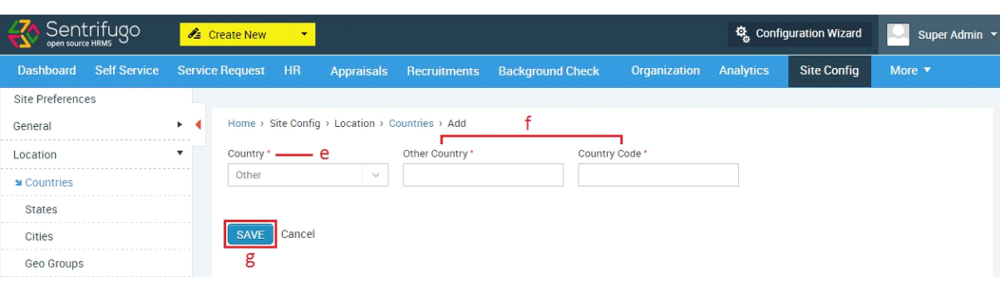
- Select Other in the Country field
- Provide Other Country name and code
- Click SAVE button
Once an unavailable ‘Country’ name is added, it will be appear in the drop down option when you want to add a state or city. You can use the same procedure shown above to add States and Cities not available in the application.
Currencies
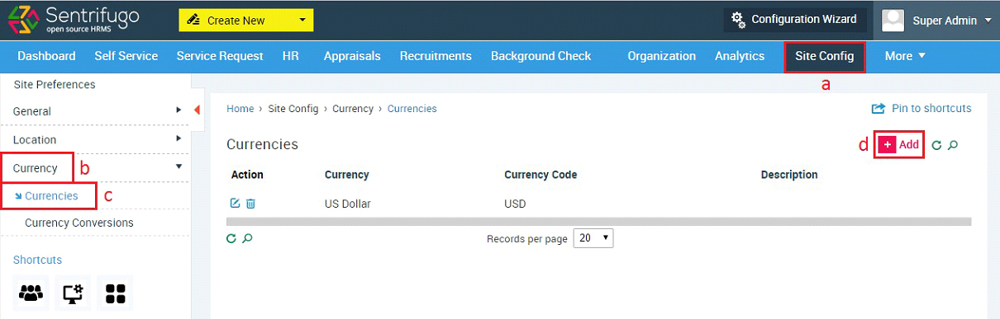
- Click Site Config in the top menu
- Click Currency on the left menu panel
- Click Currencies in the submenu
- Click +Add button
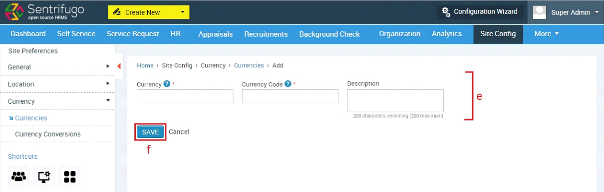
- Enter the required details
- Click SAVE button
Currency Conversions
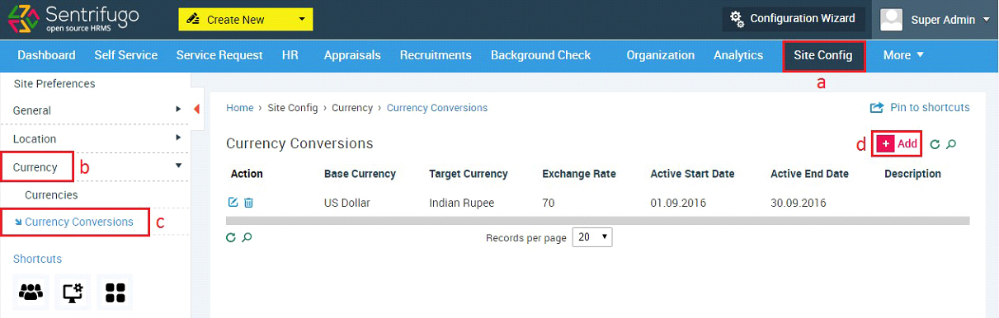
- Click Site Config menu option
- Click Currency on the left menu panel
- Click Currency Conversions in the submenu
- Click +Add button
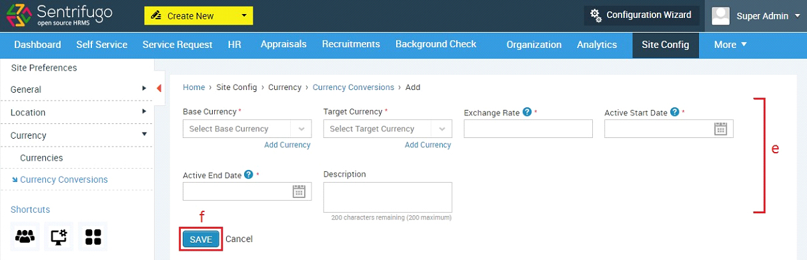
- Enter the required details
- Click SAVE button